대기환경기사 (2011-10-02 기출문제)
1과목: 대기오염 개론
1. 다음 설명하는 오염물질로 가장 적합한 것은?
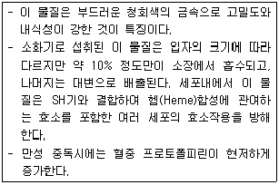
- Cr
- Hg
- Pb
- Al
(정답률: 86%)

2. 1∼2μm 이하의 미세입자는 세정(Rain out) 효과가 작은데 그 이유로 가장 적합한 것은?
- 응축효과가 크기 때문에
- 부정형의 입자가 많기 때문에
- 휘산효과가 크기 때문에
- 브라운 운동을 하기 때문에
(정답률: 89%)
3. 산성비가 토양에 미치는 영향에 관한 설명으로 옳지 않은 것은?
- 산성강수가 가해지면 토양은 산적 성격이 약한 교환기부터 순서적으로 Ca2+, Mg2+, Na+, K+ 등의 교환성 염기를 방출하고, 대신 그 교환자리에 H+가 흡착되어 치환된다.
- 교환성 Al은 산성의 토양에만 존재하는 물질이고, 교환성 H와 함께 토양 산성화의 중요한 요인이 된다.
- Al3+은 뿌리의 세포분열이나 Ca 또는 P의 흡수나 흐름을 저해한다.
- 토양의 양이온 교환기는 강산적 성격을 갖는 부분과 약산적 성격을 갖는 부분적으로 나누는데, 결정도가 낮은 점토광물은 강산적이다.
(정답률: 79%)
4. 지상 30m에서의 풍속이 4m/s 로 측정되었을 때 지상 90m에서 예측되는 풍속은? (단, Deacon의 식을 적용하고, 풍속지수는 1/3)
- 12m/s
- 5.77m/s
- 2.77m/s
- 1.44m/s
(정답률: 68%)
5. 역전에 관한 설명으로 옳지 않은 것은?
- 침강성 역전의 고도는 보통 1000∼2000m 내외에서 형성되며, 넓은 지역에 걸쳐서 발생하기도 한다.
- 침강역전은 배출원의 상부에서 발생하며 장기간 지속될 경우 오염물질의 장기 축적에 기여할 수 있다.
- 복사역전은 침강역전과는 달리 대기오염물질이 위치하는 대기층에서 생긴다.
- 복사역전은 일출 후 구름낀 흐린 상태에서 자주 일어나고 긴 겨울철보다는 여름에 잘 발생한다.
(정답률: 71%)
6. 다음 국제적인 움직임 중 오존층 보호와 관련이 가장 적은 것은?
- 비엔나 협약
- 몬트리올 의정서
- 코펜하겐 회의
- 헬싱키 의정서
(정답률: 77%)
7. 광화학반응의 주요 생성물 중 PAN(Peroxyacetyl nitrate)의 화학식을 옳게 나타낸 것은?
- CH3CO2N4O2
- CH3C(O)O2NO2
- C5H11C(O)O2N4O2
- C5H11CO2NO2
(정답률: 91%)
8. 다음 대기오염물질 중 1차 오염물질(Primary Pollutants)에 해당하지 않는 것은?
- HCl
- NH3
- NaCl
- NOCl
(정답률: 85%)
9. 각 오염물질의 대사 및 작용기전으로 옳지 않은 것은?
- 알루미늄화합물은 소장에서 인과 결합하여 인 결핍과 골연화증을 유발한다.
- 암모니아와 아황산가스는 물에 대한 용해도가 높기 때문에 흡입된 대부분의 가스가 상기도 점막에서 흡수되므로 즉각적으로 자극증상을 유발한다.
- 삼염화에틸렌은 다발성신경염을 유발하고, 중추신경계를 억제하는데 간과 신경에 미치는 독성이 사염화탄소에 비해 현저하게 높다.
- 이황화탄소는 중추신경계에 대한 특징적인 독성작용으로 심한 급성 또는 아급성 뇌병증을 유발한다.
(정답률: 78%)
10. 기온역전(Temperature Inversion)의 종류에 해당하지 않는 것은?
- 이류역전
- 난류역전
- 해풍역전
- 단층역전
(정답률: 60%)
11. 일산화탄소의 영향에 관한 설명으로 옳지 않은 것은?
- 인체 내 혈액 중 Hb와 결합한 HbCO의 포화율이 보통 1%미만에서는 인체에 미치는 영향이 거의 없다고 알려져 있다.
- 혈중 헤모글로빈과의 친화력이 HbO2보다 10배 정도 강하다.
- 감수성은 개인에 따라 차이가 있지만 적혈구수 및 혈색소량에 이상이 있는 사람은 감수성이 높다.
- 만성적인 영향으로는 성장장애, 만성 호흡기질환(폐렴, 기관지염, 발작성 천식 등), 심장비대 등이 있다.
(정답률: 67%)
12. 수용모델(Receptor Model)에 관한 설명으로 가장 거리가 먼 것은?
- 측정자료를 입력자료로 사용하므로 시나리오 작성이 가능하고, 미래의 대기질 예측이 용이하다.
- 오염원의 조업 및 운영상태에 대한 정보없이도 사용 가능하다.
- 새로운 오염원, 불확실한 오염원과 불법배출 오염원을 정량적으로 확인 평가할 수 있다.
- 입자상 및 가스상 물질, 가시도 문제 등 환경과학 전반에 응용할 수 있다.
(정답률: 87%)
13. 굴뚝의 유효고도가 40m이다. 일반적인 조건이 같을 때 최대 지표농도를 현재의 1/3로 하려면 유효고도를 얼마만큼 증가시켜야 하는가? (단, Sutton식 이용)
- 16.6m
- 18.6m
- 24.6m
- 29.3m
(정답률: 26%)
14. 다음 대기오염물질 중 공기에 대한 비중이 1.6 정도이며, 질식성이 있고 , 적갈색을 나타내며 자극성을 가진 가스는?
- 일산화질소
- 이산화황
- 염소가스
- 이산화질소
(정답률: 78%)
15. 지구 대기의 성질에 관한 설명으로 옳지 않은 것은?
- 지표면의 온도는 약 15℃ 정도이나 상공 12km 정도의 대류권계면에서는 약 -55℃ 정도까지 하강한다.
- 성층권계면에서의 온도는 지표보다는 약간 낮으나 성층권계면 이상의 중간권에서 기온은 다시 하강한다.
- 중간권 이상에서의 온도에서는 대기의 분자운동에 의해 결정된 온도로서 직접 관측된 온도와는 다르다.
- 대류권과 비교하였을 때 열권에서 분자의 운동속도는 매우 느리지만 공기평균자유행로는 짧다.
(정답률: 84%)
16. 다음 중 CFC-11의 화학식으로 옳은 것은?
- CF2Cl2
- CFCl3
- CH2FCl
- CH3Cl
(정답률: 77%)
17. 입자상 물질의 농도가 0.02mg/m3인 지역의 가시거리는? (단, 상대습도는 70% 이며, 상수 A는 1.2 이다.)
- 84km
- 60km
- 32km
- 8km
(정답률: 76%)
18. 최대혼합깊이 (MMD)에 관한 설명으로 옳지 않은 것은?
- 야간에 역전이 심할 경우에는 점차 증가하여 그 값이 5000m 이상이 될 수도 있다.
- 통상적으로 계절적으로는 이른 여름에 아주 크다.
- 열부상효과에 의하여 대류에 의한 혼합층의 깊이가 결정되는데 이를 MMD라 한다.
- 실제로 MMD는 지표위 수 km까지의 실제 공기의 온도종단도를 작성함으로써 결정된다.
(정답률: 79%)
19. 바람에 관한 다음 설명 중 옳지 않은 것은?
- 북반구의 경도풍은 저기압에서는 시계바늘 이동의 반대방향으로 회전하면서 위쪽으로 상승하면서 분다.
- 마찰층 내 바람은 높이에 따라 시계방향으로 각천이가 생겨나며, 위로 올라갈수록 실제 풍향은 점점 지균풍과 가까워진다.
- 산풍은 경사면 → 계곡→ 주계곡으로 수렴하면서 풍속이 가속되기 때문에 낮에 산위쪽으로 부는 곡풍보다 더 강하다.
- 해륙풍이 부는 원인은 낮에는 육지보다 바다가 빨리 더워져서 바다의 공기가 상승하기 때문에 바다에서 육지로 8∼15km 정도까지 바람(해풍)이 분다.
(정답률: 69%)
20. 대기의 안정도 조건에 관한 설명으로 옳지 않은 것은?
- 과단열적조건은 환경감율이 건조단열감율보다 클 때를 말한다.
- 중립적 조건은 환경감율과 건조단열감율이 같을 때를 말한다.
- 미단열적 조건은 건조단열감율이 환경감율보다 작을 때를 말하며, 이 때의 대기는 아주 안정하다.
- 등온 조건은 기온감율이 없는 대기상태이므로 공기의 상·하 혼합이 잘 이루어지지 않는다.
(정답률: 77%)
2과목: 연소공학
21. 유류 버너의 종류에 관한 다음 설명 중 가장 거리가 먼 것은?
- 유압식버너에서 연료유의 분무각도는 압력, 점도 등으로 약간 달라지지만 40∼90° 정도이다.
- 저압공기식버너는 구조가 간단하고 , 유량조절범위는 1:10 정도이며, 무화상태가 좋아서 대형가열로에 주로 사용한다.
- 고압공기식버너는 고점도 사용에도 가능하며, 분무각도가 20∼30° 정도이며, 장염이나 연소시 소음이 발생된다.
- 회전식버너의 유량조절범위는 1:5 정도이고, 유압식버너에 비해 연료유의 분무화 입경은 비교적 크다.
(정답률: 81%)
22. S함량 3%의 벙커 C유 100kL를 사용하는 보일러에 S함량 1%인 벙커 C유로 30% 섞어 사용하면 SO2 배출량은 몇 % 감소하는가? (단, 벙커 C유 비중 0.95, 벙커 C유 중의 S는 모두 SO2로 전환됨)
- 16%
- 20%
- 25%
- 28%
(정답률: 57%)
23. 연소가스 분석결과 CO2 17.5%, O2 7.5% 일 때 CO2max%는?
- 20.6
- 23.6
- 27.2
- 34.8
(정답률: 54%)
24. 연료 연소 시 매연이 잘 생기는 순서로 옳은 것은?
- 타르 ＞중유 ＞ 경유 ＞LPG
- 타르 ＞경유 ＞중유 ＞LPG
- 중유 ＞타르 ＞경유 ＞LPG
- 경유 ＞타르 ＞중유 ＞LPG
(정답률: 74%)
25. 엔탈피에 대한 설명으로 옳지 않은 것은?
- 엔탈피는 반응경로와 무관하다.
- 엔탈피는 물질의 양에 비례한다.
- 흡열반응은 반응계의 엔탈피가 감소한다.
- 반응물이 생성물보다 에너지상태가 높으면 발열반응이다.
(정답률: 76%)
26. 연료의 종류에 따른 연소 특성으로 옳지 않은 것은?
- 기체연료는 저발열량의 것으로 고온을 얻을 수 있고, 전열효율을 높일 수 있다.
- 액체연료는 화재, 역화 등의 위험이 크며, 연소온도가 높아 국부가열을 일으키기 쉽다.
- 액체연료는 기체연료에 비해 적은 과잉 공기로 완전연소가 가능하다.
- 액체연료의 경우 회분은 아주 적지만, 재 속의 금속산화물이 장애원인이 될 수 있다.
(정답률: 78%)
27. 기체연료의 연소방식과 연소장치에 관한 설명으로 옳지 않은 것은?
- 확산연소는 주로 탄화수소가 적은 발생로가스, 고로가스 등에 적용되는 연소방식이다.
- 예혼합연소는 화염온도가 낮아 국부가열의 염려가 없고 연소부하가 작은 경우 사용이 가능하며, 화염의 길이가 길다.
- 저압버너는 역화방지를 위해 1차 공기량을 이론공기량의 약 60% 정도만 흡입하고 2차 공기는 로 내의 압력을 부압으로 하여 공기를 흡인한다.
- 예혼합연소에 사용되는 버너에는 저압버너, 고압버너, 송풍버너 등이 있다.
(정답률: 78%)
28. 다음 연료의 조성성분에 따른 연소특성으로 가장 거리가 먼 것은?
- 휘발분 : 매연발생을 방지한다.
- 수분 : 열손실을 초래하고 착화를 불량하게 한다.
- 고정탄소 : 발열량이 높고 연소성을 좋게 한다.
- 회분 : 발열량이 낮고 연소성이 양호하지 않다.
(정답률: 77%)
29. 미분탄 연소장치에 관한 설명으로 옳지 않은 것은?
- 점결탄, 저발열량탄 등과 같은 연료도 사용할 수 있다.
- 연소제어가 용이하고 점화 및 소화시 손실이 적다.
- 부하변동에 쉽게 응할 수 없으며, 연소효율도 낮다.
- 분쇄기 및 배관 중에 폭발이 일어날 우려가 있고 집진장치가 필요하다.
(정답률: 73%)
30. 공기비가 클 경우 일어나는 현상에 관한 설명으로 옳지 않은 것은?
- SO2, NO2 의 함량이 증가하여 부식 촉진
- 가스폭발의 위험과 매연 증가
- 배기가스에 의한 열손실 증대
- 연소실내 연소온도 감소
(정답률: 80%)
31. 다음 연료 중 착화온도가 가장 높은 것은?
- 역청탄
- 무연탄
- 수소
- 발생로가스
(정답률: 59%)
32. 저위발열량 11500kcal/kg인 중유를 연소시키는데 필요한 이론공기량은? (단, Rosin식 이용)
- 9.8Sm3/kg
- 11.8Sm3/kg
- 14.2Sm3/kg
- 17.8Sm3/kg
(정답률: 35%)
33. 유동층 연소로에 사용되는 유동사의 구비조건으로 옳지 않은 것은?
- 활성이 클 것
- 융점이 높을 것
- 비중이 작을 것
- 입도분포가 균일할 것
(정답률: 63%)
34. 탄소 89%, 수소 11%인 조성의 액체 연료를 매시 187kg 완전연소한 경우 연소 배기가스를 분석하였더니 CO2 12.5%, O2 3.5%, N2 84%의 결과를 얻었다. 이 경우 2시간 동안 연소에 실제 소요된 공기량(Sm3)은?
- 약 1200 Sm3
- 약 2400 Sm3
- 약 3600 Sm3
- 약 4800 Sm3
(정답률: 29%)
35. 다음 중 기체의 연소속도를 지배하는 주요인자와 가장 거리가 먼 것은?
- 발열량
- 촉매
- 산소와의 혼합비
- 산소농도
(정답률: 77%)
36. 옥탄 6.28kg을 완전연소 시키기 위하여 소요되는 이론공기량은?
- 약 60 kg
- 약 75 kg
- 약 80 kg
- 약 95 kg
(정답률: 35%)
37. 석탄을 공업분석 한 결과 수분 3%, 휘발분 7%, 회분 5% 일 때 이 석탄의 연료비는?
- 9.6
- 10.5
- 11.4
- 12.1
(정답률: 31%)
38. 등가비(Φ)에 관한 설명으로 옳지 않은 것은?
- Φ=(실제의 연료량 / 산화제) / (완전연소를위한 이상적연료량 / 산화제)
- Φ ＞1 경우는 불완전연소가 된다.
- Φ< 1 경우는 공기가 부족한 경우이다.
- Φ ＞1 경우는 연료가 과잉인 경우이다.
(정답률: 76%)
39. CH4 85%, CO2 12%, N2 3%인 연료가스 1Sm3에 대하여 11.3Sm3의 공기를 사용하여 연소하였을 때의 공기비는?
- 1.1
- 1.2
- 1.4
- 1.6
(정답률: 49%)
40. 다음 중 화력발전소나 시멘트 소성로와 같은 대형 대용량 연소시설에서 석탄으로 연소시키고자 할 때 가장 적합한 연소방식은?
- 화격자 연소
- 미분탄 연소
- 유동층 연소
- 스토커 연소
(정답률: 62%)
3과목: 대기오염 방지기술
41. 평판형 전기집진장치의 집진판 사이의 간격이 10cm, 가스의 유속은 3m/s, 입자가 집진극으로 이동하는 속도가 4.8cm/s 일 때, 층류영역에서의 입자를 완전히 제거하기 위한 이론적인 집진극의 길이는?
- 1.34m
- 2.14m
- 3.13m
- 4.29m
(정답률: 51%)
42. 석탄화력발전소에서 120m3/min의 배출가스를 전기집진장치로 처리한다. 입자이동 속도가 15cm/s일 때, 이 집진장치의 효율이 99.6%가 되려면 집진극의 면적은? (단, Deutsch-Anderson 식 적용)
- 약 47m2
- 약 54m2
- 약 61m2
- 약 74m2
(정답률: 35%)
43. 여과집진장치의 탈진방식에 관한 설명으로 옳지 않은 것은?
- 간헐식의 여포 수명은 연속식에 비해서는 긴 편이고, 점성이 있는 조대먼지를 탈진할 경우 여포손상의 가능성이 있다.
- 간헐식은 먼지의 재비산이 적고 높은 집진율을 얻을 수 있다.
- 연속식은 포집과 탈진이 동시에 이루어져 압력손실의 변동이 크므로, 저농도, 저용량의 가스처리에 효율적이다.
- 연속식은 탈진 시 먼지의 재비산이 일어나 간헐식에 비해 집진율이 낮고 여과자루의 수명이 짧은 편이다.
(정답률: 53%)
44. 직경이 50cm인 관에서 유체의 흐름속도가 4m/s로 유체가 흐르고 있다. 이 유체의 점도가 1.5Centipoise라고 할 때 이 유체의 ① 레이놀드수와 ② 흐름평가로 옳은 것은? (단, 유체의 밀도는 1.3kg/m3이며, 흐름평가는 2100을 기준으로 한다.)
- ① 173, ② 층류
- ① 1733, ② 층류
- ① 17333, ② 난류
- ① 173333, ② 난류
(정답률: 63%)
45. 관성력 집진장치에 관한 설명으로 옳지 않은 것은?
- 압력손실은 30∼70mmH2O 정도이고, 굴뚝 또는 배관에 적용될 때가 있다.
- 반전식의 경우 방향전환을 하는 가스의 곡률반경이 작을수록 미세한 먼지를 분리포집할 수 있다.
- 함진가스의 방향 전환각도가 크고, 방향 전환횟수가 적을수록 압력손실은 커지나 집진율이 높아진다.
- 곡관형, louver형, pocket형, multibaffle형 등은 반전식에 해당한다.
(정답률: 66%)
46. 습식배연탈질법에 관한 설명으로 옳지 않은 것은?
- 처리액 중 아질산염 및 질산염의 처리가 용이하다.
- 일반적으로 조작의 공정이 복잡하고, 가격이 높다.
- 건식 암모니아 환원법에 비해 연구개발이 느리다.
- NO는 반응성이 낮고 NO2 또는 N2O5 까지 산화하기 위해서는 강한 산화제가 필요하므로 처리비용이 높아진다.
(정답률: 40%)
47. 유해가스의 물리적 흡착에 관한 설명으로 옳지 않은 것은?
- 처리가스의 온도가 낮을수록 잘 흡착된다.
- 흡착제에 대한 용질의 분압이 높을수록 흡착량이 증가한다.
- 가역성이 높고 여러 층의 흡착이 가능하다.
- 분자량이 작을수록 잘 흡착된다.
(정답률: 53%)
48. 배출원으로부터 배출되는 오염물질에 따른 처리방법의 연결로 옳지 않은 것은?
- 이황화탄소 - 암모니아주입법
- 일산화탄소 - 촉매산화처리법
- 다이옥신 - 적외선광분해법
- 시안화수소 - 수세처리법
(정답률: 47%)
49. 황산화물 처리방법 중 석회석법에 관한 설명으로 옳지 않은 것은?
- 초기 투자비용이 적게 들어 소규모 보일러나 노후 보일러용으로 많이 사용되었다.
- 부대시설은 많이 필요하나, 아황산가스의 제거효율은 높은 편이다.
- 배기가스 온도가 잘 떨어지지 않는다.
- 연소로 내에서의 화학반응은 소성, 흡수, 산화의 3가지로 구분할 수 있다.
(정답률: 61%)
50. 외부식 후드의 특성으로 옳지 않은 것은?
- 다른 종류의 후드에 비해 근로자가 방해를 많이 받지 않고 작업할 수 있다.
- 포위식 후드보다 일반적으로 필요송풍량이 많다.
- 외부 난기류의 영향으로 흡인효과가 떨어진다.
- 천개형 후드, 그라인더용 후드 등이 여기에 해당하며, 기류속도가 후드 주변에서 매우 느리다.
(정답률: 71%)
51. 물 속에서 오존을 이용하여 다이옥신을 산화분해 할 때 일반적으로 분해속도가 커지는 조건으로 가장 적합한 것은?
- 산성 조건일수록, 온도가 낮을수록
- 산성 조건일수록, 온도가 높을수록
- 염기성 조건일수록, 온도가 낮을수록
- 염기성 조건일수록, 온도가 높을수록
(정답률: 52%)
52. 전기집진장치의 특징으로 옳지 않은 것은?
- 운전조건의 변화에 따른 유연성이 적다.
- 광범위한 온도와 대용량 범위에서 운전이 가능하다.
- 비저항이 큰 분진의 제거가 용이하다.
- 압력손실이 적어 송풍기의 동력비가 적게 든다.
(정답률: 50%)
53. 암모니아 농도가 용적비로 215ppm 인 실내공기를 송풍기로 환기시킬 때 실내용적이 4040m3 이고, 송풍량이 111m3/min 이면 농도를 11ppm으로 감소시키기 위한 시간은?
- 약 120min
- 약 108min
- 약 96min
- 약 88min
(정답률: 43%)
54. 직경이 30cm, 높이가 10m 인 원통형 여과집진장치를 이용하여 배출가스를 처리하고자 한다. 배출가스량은 750m3/min이고, 여과속도는 3.5cm/s로 할 경우, 필요한 여포수는?
- 32개
- 38개
- 42개
- 45개
(정답률: 66%)
55. 압력손실은 100∼200mmH2O 정도이고, 가스량 변동에도 비교적 적응성이 있으며, 흡수액에 고형분이 함유되어 있는 경우에는 흡수에 의해 침전물이 생기는 등 방해를 받는 세정장치로 가장 적합한 것은?
- 다공판탑
- 제트스크러버
- 충전탑
- 벤츄리스크러버
(정답률: 67%)
56. 어떤 단순후드의 유입계수가 0.88 이고, 속도압이 30mmH2O일 때 후드정압은?(오류 신고가 접수된 문제입니다. 반드시 정답과 해설을 확인하시기 바랍니다.)
- -38.7mmH2O
- 0.29mmH2O
- 8.7mmH2O
- 46.5mmH2O
(정답률: 34%)
57. A집진장치의 입구와 출구에서의 함진가스 농도가 각각 10g/Sm3, 100mg/Sm3 이였고, 그 중 입경범위가 0∼5μm인 먼지의 질량분율이 각각 8%와 60% 였다면 이 집진장치에서 입경범위 0∼5μm인 먼지의 부분집진율(%)은?
- 89.5%
- 90.3%
- 92.5%
- 99.0%
(정답률: 61%)
58. 처리가스 유량이 5000m3/hr인 가스를 충전탑을 이용하여 처리하고자 한다. 충전탑내 가스의 속도를 0.34m/sec로 할 경우 흡수탑의 직경은?
- 약 1.9m
- 약 2.3m
- 약 2.8m
- 약 3.5m
(정답률: 61%)
59. 헨리의 법칙을 따르는 유해가스가 물속에 2.0kmol/m3 만큼 용해되어 있을 때, 분압이 258.4mmH2O 이었다면, 이 유해가스의 분압이 38mmHg로 될 때의 물 속의 유해가스 농도는? (단, 기타 조건은 변화없음)
- 10.0 kmol/m3
- 8.0 kmol/m3
- 6.0 kmol/m3
- 4.0 kmol/m3
(정답률: 41%)
60. 세정집진장치의 특성으로 거리가 먼 것은?
- 소수성 입자의 집진율이 낮은 편이다.
- 점착성 및 조해성 분진의 처리가 가능하다.
- 연소성 및 폭발성 가스의 처리가 가능하다.
- 처리된 가스의 확산이 용이하다.
(정답률: 47%)
4과목: 대기오염 공정시험기준(방법)
61. 굴뚝 배출가스상 물질의 시료채취방법에 관한 설명으로 옳지 않은 것은?
- 채취관은 안지름 6mm∼25mm 정도의 것을 쓴다.
- 도관의 안지름은 4mm∼25mm 로 한다.
- 채취부의 수은 마노미터는 대기와 압력차가 100mmHg 이상인 것을 쓴다.
- 채취부의 펌프는 배기능력이 5L/min 이상의 개방형인 것을 쓴다.
(정답률: 59%)
62. 굴뚝 배출가스 중 황화수소를 용량법에 의해 분석하고자 할 때 시료채취량과 흡인속도가 옳게 연결된 것은? (단, 정량범위는 100∼2000ppm 이다. )( 순서대로 시료채취량, 흡인속도)
- 1∼10mL, 0.1∼0.5L/min
- 5∼15mL, 0.5∼1L/min
- 100mL∼1L, 0.5L/min
- 10∼20L, 1L/min
(정답률: 40%)
63. 환경대기 중의 석면 측정방법에 관한 설명으로 가장 거리가 먼 것은?(오류 신고가 접수된 문제입니다. 반드시 정답과 해설을 확인하시기 바랍니다.)
- 석면먼지의 농도표시는 표준상태의 기체 1mL 중에 함유된 석면섬유의 개수로 표시한다.
- 위상차현미경이란 두께가 동일한 무색 투명한 물체의 각 부분의 입사광 사이에 생기는 명암차를 화상면에서 위상차로 바꾸어 구조를 보기 쉽도록 한 현미경이다.
- 위상차현미경을 사용하여 섬유상으로 보이는 입자를 계수하고 같은 입자를 보통의 생물현미경으로 바꾸어 계수하여, 그 계수치들의 차를 구하면 굴절율이 거의 1.5인 섬유상의 입자를 계수할 수 있다.
- 멤브레인 필터는 셀룰로우스 에스테르를 원료로 한 얇은 다공성의 막으로, 구멍의 지름은 평균 0.01∼10μm이다.
(정답률: 34%)
64. 원자흡수분광광도 분석을 위해 시료를 전처리 하고자 한다. "타르 기타 소량의 유기물을 함유하는 시료"의 전처리 방법으로 가장 거리가 먼 것은?
- 마이크로파 산분해법
- 저온 회화법
- 질산-염산법
- 질산-과산화수소수법
(정답률: 53%)
65. 다음 중 물질을 취급 또는 보관하는 동안에 기체 또는 미생물이 침입하지 않도록 내용물을 보호하는 용기를 뜻하는 것은?
- 기밀용기
- 밀폐용기
- 밀봉용기
- 차광용기
(정답률: 57%)
66. 비산먼지의 농도를 구하기 위해 측정한 조건 및 결과가 다음과 같을 때 비산먼지의 농도(mg/m3)는?
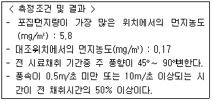
- 5.6
- 6.8
- 8.1
- 10.1
(정답률: 50%)
67. 다음은 배출가스 중의 카드뮴 측정 (자외선 가시선 분광법)에 관한 설명이다. ( ) 안에 알맞은 것은?
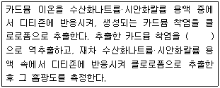
- 벤젠
- 염화주석산 용액
- 구연산암모늄 용액
- 타타르산 용액
(정답률: 49%)
68. 굴뚝 배출가스 내 산소측정 분석계 중 측정셀, 자극보조 가스용 조리개, 검출소자 , 증폭기 등으로 구성되는 것은?
- 자기풍 분석계
- 압력 검출형 자기력 분석계
- 전기화학식 질코니아 분석계
- 담벨형 자기력 분석계
(정답률: 57%)
69. 어떤 덕트의 가스를 피토우관으로 측정하였더니 동압이 13mmH2O, 유속은 20m/s 이었다. 이 덕트의 밸브를 전부 열어 측정된 동압이 26mmH2O 이었다면 이 때의 유속은? (단, 기타조건은 변함없다.)
- 21.2 m/s
- 24.5 m/s
- 25.3 m/s
- 28.3 m/s
(정답률: 32%)
70. 굴뚝 배출가스 중 암모니아의 중화적정 분석방법에 관한 설명으로 옳은 것은?
- 분석용 시료용액을 황산으로 적정하여 암모니아를 정량한다.
- 시료가스를 산성조건에서 지시약을 넣고 N/100 NaOH로 적정하는 방법이다.
- 시료가스 채취량이 40L일 때 암모니아농도 10ppm 이하인 경우에 적용한다.
- 지시약은 페놀프탈레인용액과 메틸레드용액을 1 : 2 부피비로 섞어 사용한다.
(정답률: 37%)
71. 굴뚝 배출가스의 유속 및 유량 측정방법 중 피토우관 및 경사마노미터법에 사용되는 기구 및 장치에 관한 설명으로 옳지 않은 것은?
- 피토우관의 각 분기관과 오리피스 평면과의 거리는 바깥지름의 약 2∼3배 사이에 있어야 한다.
- 피토우관은 스텐레스와 같은 재질의 금속관을 사용하고 , 관의 바깥지름의 범위는 4∼10mm 정도이어야 한다.
- 피토우관 계수는 사전에 확인되어야 하며, 고유번호가 부여되고 이 번호는 지워지지 않도록 관 몸체에 새겨야 한다.
- 차압계로는 경사마노미터, 전자마노미터 등을 사용하며, 최소 0.3mmH2O 눈금을 읽을 수 있는 마노미터를 사용한다.
(정답률: 32%)
72. 배출가스 중 오르자트 가스 분석계로 산소를 측정할 때 사용되는 산소 흡수액은?
- 수산화칼슘용액 + 피로갈롤 용액
- 염화제일주석용액 + 피로갈롤 용액
- 수산화칼륨용액 + 피로갈롤 용액
- 입상아연 + 피로갈롤 용액
(정답률: 58%)
73. 온도표시에 관한 설명으로 옳지 않은 것은?
- "냉 후"(식힌 후)라 표시되어 있을 때는 보온 또는 가열 후 실온까지 냉각된 상태를 뜻한다.
- 상온은 15∼25℃, 실온은 1∼35℃로 한다.
- 찬 곳은 따로 규정이 없는 한 0∼5℃를 뜻한다.
- 온수는 60∼70℃ 이고, 열수는 약 100℃를 말한다.
(정답률: 70%)
74. 어느 분리관의 보유시간 (tR)이 5분, 피이크의 좌우 변곡점에서 접선이 자르는 바탕선이 길이(W) 10mm, 기록지 이동속도 5mm/min 이었다면 이론단수는?
- 100
- 400
- 800
- 1600
(정답률: 39%)
75. 굴뚝 배출가스 중 벤젠을 가스크로마토그래프법으로 분석하고자 할 때 그 방법에 해당하지 않는 것은?
- 액체흡착 용매탈착법
- 고체흡착 용매추출법
- 고체흡착 열탈착법
- 테들라 백-열탈착법
(정답률: 36%)
76. 다음은 굴뚝 배출가스 내 브롬화합물의 티오시안산 제2수은법에 관한 설명이다. ( )안에 알맞은 것은?(관련 규정 개정전 문제로 여기서는 기존 정답인 3번을 누르면 정답 처리됩니다. 자세한 내용은 해설을 참고하세요.)
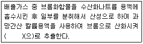
- 클로로폼
- 차아염소산나트륨용액
- 사염화탄소
- 노말헥산
(정답률: 35%)
77. 전기 아크로를 사용하는 철강공장의 특정 발생원에서 굴뚝을 거치지 않고 외부로 비산 배출되는 먼지의 불투명도 측정방법에 관한 설명으로 옳은 것은?
- 측정위치는 비산먼지가 건물로부터 제일 많이 새어나오는 곳에서 측정자가 태양과 일직선상에서 있어야 한다.
- 측정자는 건물로부터 배출가스를 분명하게 관측할 수 있는 최대 3km 이내에 있어야 한다.
- 전기아크로의 출강에서 다음 출강 개시 전까지 매연측정기를 이용하여 5분 간격으로 비탁도를 측정한다.
- 비탁도는 최소 0.5도 단위로 측정값을 기록하며 비탁도에 20%를 곱한 값을 불투명도 값으로 한다.
(정답률: 43%)
78. 굴뚝반경 (굴뚝 단면이 원형)이 1.6m 인 경우 측정점 수는?
- 8
- 12
- 16
- 20
(정답률: 49%)
79. 비분산적외선분석법에서 분석계의 최고 눈금값을 교정하기 위하여 사용하는 가스는?
- 비교가스
- 제로가스
- 스팬가스
- 필터가스
(정답률: 70%)
80. 환경대기 중 입자상물질을 로우볼륨에어샘플러로 분당 20L 씩 채취할 경우, 유량계의 눈금값 Qr (L/분)을 나타내는 식으로 옳은 것은? (단, 1기압에서 기준이며, ΔP(mmHg)는 마노미터로 측정한 유량계 내의 압력손실이다.)
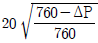
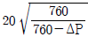
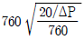
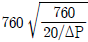
(정답률: 55%)
5과목: 대기환경관계법규
81. 대기환경보전법령상 초과부과금의 부과대상이 되는 오염물질이 아닌 것은?
- 이황화탄소
- 염화수소
- 이산화질소
- 암모니아
(정답률: 52%)
82. 대기환경보전법령상 연료를 연소하여 황산화물을 배출하는 시설의 기본부과금의 농도별 부과계수로 옳은 것은? (단, 연료의 황함유량(%)은 1.0% 이하, 황산화물의 배출량을 줄이기 위하여 방지시설을 설치한 경우와 생산공정상 황산화물의 배출량이 줄어든다고 인정하는 경우 제외)
- 0.1
- 0.2
- 0.4
- 1.0
(정답률: 46%)
83. 악취방지법규상 악취검사기관의 검사시설 및 장비가 부족하거나 고장난 상태로 7일 이상 방치한 경우로써 규정에 의한 악취검사기관의 지정기준에 미치지 못하게 된 경우 3차 행정처분기준으로 가장 적합한 것은?
- 지정취소
- 업무정지3개월
- 업무정지6개월
- 업무정지12개월
(정답률: 41%)
84. 대기환경보전법규상 석회로시설 및 가열시설의 대기오염물질 배출시설 기준으로 옳은 것은? (단, 펄프, 종이 및 종이제품 제조시설과 인쇄 및 각종 기록매체 제조(복제)시설에 한함)
- 연료사용량이 시간당 25킬로그램 이상
- 연료사용량이 시간당 30킬로그램 이상
- 연료사용량이 시간당 50킬로그램 이상
- 연료사용량이 시간당 100킬로그램 이상
(정답률: 32%)
85. 다음은 대기오염경보단계별 해제기준이다. ( )안에 알맞은 것은?
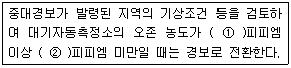
- ① 0.3, ② 0.5
- ① 0.5, ② 1.0
- ① 1.0, ② 1.2
- ① 1.2, ② 1.5
(정답률: 51%)
86. 대기환경보전법규상 위임업무 보고사항 중 "대기오염물질 배출상황 검사" 업무의 보고횟수 기준은?
- 연 1회
- 연 2회
- 연 4회
- 수시
(정답률: 41%)
87. 대기환경보전법령상 경유를 사용하는 자동차의 경우 제작차에서 나오는 대통령령으로 정하는 오염물질의 종류에 해당하지 않는 것은?
- 탄화수소
- 알데히드
- 질소산화물
- 일산화탄소
(정답률: 51%)
88. 대기환경보전법규상 배출가스 관련부품을 장치별로 구분할 때 다음 중 배출가스 자기진단장치(On Board Diagnostics)에 해당하는 것은?
- EGR 제어용 서모밸브 (EGR Control Thermo Valve)
- 연료계통 감시장치 (Fuel System Monitor)
- 정화조절밸브 (Purge Control Valve)
- 냉각수온센서 (Water Temperature Sensor)
(정답률: 48%)
89. 악취방지법규상 다음 지정악취물질의 배출허용기준으로 옳지 않은 것은?
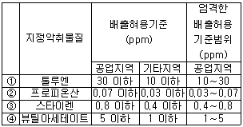
- ①
- ②
- ③
- ④
(정답률: 36%)
90. 대기환경보전법령상 환경부장관은 대기오염물질 측정기기의 운영관리기준을 준수하지 않는 사업자에 대하여 조치명령을 하는 때는 부득이한 사유인 경우 신청에 의한 연장기간까지 포함하여 최대 몇 개월의 범위에서 개선기간을 정할 수 있는가?
- 3개월
- 6개월
- 9개월
- 12개월
(정답률: 34%)
91. 대기환경보전법규상 사업자는 대기오염물질 배출시설 및 방지시설의 운영기록부를 매일 기록하고 최종 기재한 날부터 얼마간 보존(기준)하여야 하는 가?
- 1년간 보존
- 2년간 보존
- 3년간 보존
- 5년간 보존
(정답률: 32%)
92. 대기환경보전법규상 사업자가 자가방지시설을 설계·시공할 때 시·도지사에게 제출해야 하는 서류와 가장 거리가 먼 것은?
- 배출시설의 설치명세서
- 공정도
- 원료사용량, 제품생산량 및 대기오염물질 등의 배출량을 예측한 명세서
- 시공 업체명, 공사비 내역서 및 방지시설 운영규약
(정답률: 35%)
93. 대기환경보전법령상 부과금의 부과면제 등에 관한 기준이다. ( )안에 알맞은 것은?
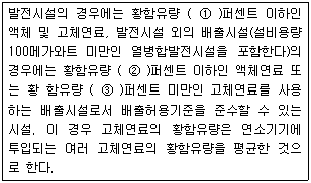
- ① 0.3, ② 0.5, ③ 0.6
- ① 0.3, ② 0.5, ③ 0.45
- ① 0.1, ② 0.3, ③ 0.5
- ① 0.1, ② 0.5, ③ 0.45
(정답률: 50%)
94. 대기환경보전법규상 운행차 배출허용기준의 일반적인 적용으로 옳지 않은 것은?
- 휘발유와 가스를 같이 사용하는 자동차의 배출가스 측정 및 배출허용기준은 가스의 기준을 적용한다.
- 건설기계 중 덤프트럭, 콘크리트믹서트럭, 콘크리트펌프트럭에 대한 배출허용기준은 화물자동차기준을 적용한다.
- 희박연소 방식을 적용하는 자동차는 공기과잉률 기준을 적용하지 아니한다.
- 알코올만 사용하는 자동차는 탄화수소 기준을 적용한다.
(정답률: 50%)
95. 대기환경보전법규상 특정대기 유해물질로만 짝지어진 것은?
- 히드라진, 카드뮴 및 그 화합물
- 망간화합물, 시안화수소
- 석면, 붕소화합물
- 크롬화합물, 인 및 그 화합물
(정답률: 55%)
96. 대기환경보전법상 시·도지사는 비산먼지의 발생억제를 위한 시설의 설치 또는 필요한 조치를 하지 아니하거나 그 시설이나 조치가 적합하지 아니하다고 인정하는 경우에는 그 사업을 하는 자에게 필요한 시설의 설치나 조치의 이행 또는 개선을 명할 수 있는데, 이러한 명령을 이행하지 아니하는 자에게 시·도지사가 명할 수 있는 조치로 가장 거리가 먼 것은?
- 시설 등의 이전명령
- 시설 등의 사용중지
- 그 사업의 중지
- 시설 등의 사용제한
(정답률: 35%)
97. 대기환경보전법상 첨가제에 대한 용어 정의로 가장 적합한 것은? (단, 기타 요건은 모두 충족된 것으로 간주한다.)
- 탄소와 수소만으로 구성된 물질로서 자동차의 연료에 소량을 첨가함으로써 자동차의 성능을 향상시키거나 자동차 배출가스를 저감시키는 화학물질을 말한다.
- 자동차의 성능을 향상시키거나 배출가스를 줄이기 위하여 자동차의 연료에 첨가하는 탄소와 수소만으로 구성된 물질을 제외한 화학물질을 말한다.
- 탄소와 수소만으로 구성된 자동차의 연료에 휘발성 연료물질 소량을 첨가함으로써 자동차의 성능을 향상시키거나 자동차 배출가스를 줄이기 위한 화학 물질을 말한다.
- 탄소와 수소, 질소 및 소량의 황으로 구성된 물질로서 자동차의 연료에 소량을 첨가함으로써 자동차의 성능을 향상시키거나 자동차 배출가스를 줄이기 위한 화학물질을 말한다.
(정답률: 36%)
98. 대기환경보전법령상 상업지역(I 지역)에서의 기본부과금의 지역별 부과계수로 옳은 것은? (단, 지역구분은 국토의 계획 및 이용에 관한 법률에 따름)
- 2.0
- 1.5
- 1.0
- 0.5
(정답률: 53%)
99. 다중이용시설 등의 실내공기질 관리법규상 신축 공동주택의 실내공기질 권고기준 중 "에틸벤젠"기준으로 옳은 것은?
- 210 ㎍/m3 이하
- 300 ㎍/m3 이하
- 360 ㎍/m3 이하
- 700 ㎍/m3 이하
(정답률: 58%)
100. 대기환경 보전법규상 관할구역의 상시대기오염을 측정하기 위해 시·도지사가 설치하는 대기오염 측정망에 해당하지 않는 것은?
- 교외대기측정망
- 도시대기측정망
- 도로변대기측정망
- 대기중금속측정망
(정답률: 39%)